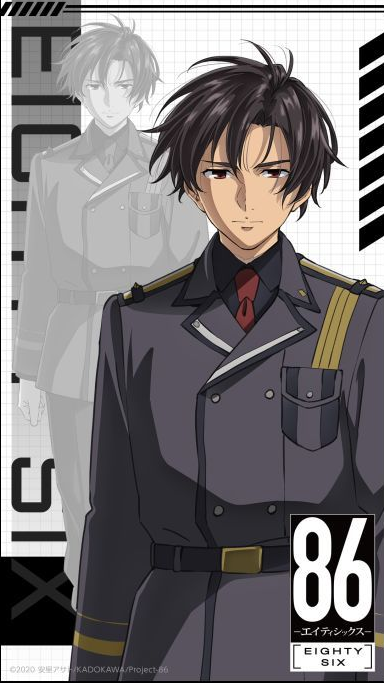
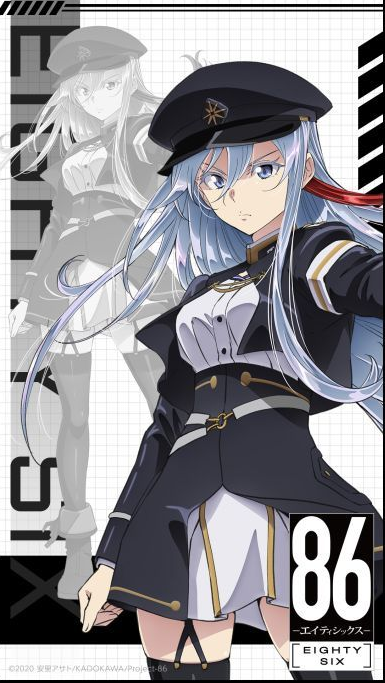
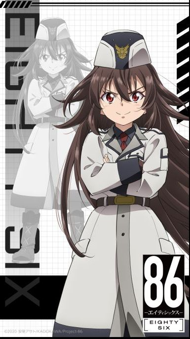

動漫天地
這裡用來介紹動漫角色以及他們的背景故事
主要角色
●辛耶·諾贊／辛（シンエイ・ノウゼン／シン，Shinei Nouzen／Shin，聲：千葉翔也、泊明日菜（幼少））
隸屬第86區，戰鬥部隊「先鋒」的隊長，隊伍編號：001，人類方代號「送葬者」（アンダーテイカー）（UNDERTAKER）。軍團方代號「火眼」（BALEYGR）。 赤系種與黑系種貴族（焰紅種與夜黑種）血統，血紅色瞳黑髮，總是掛著一條天藍色領巾。小說第一卷時為16歲[4]。 性格淡漠，不苟言笑。 父母為帝國人[註 2]，和哥哥雷在共和國出生。辛有「敵國」的帝國貴族血統，在86區有被同樣86迫害的過去。在很小的時候就被迫成為了86，在長年的戰鬥下已忘記了自己的生日，直到共和國滅亡後才從殘存的紀錄中得知。擁有高超的操縱技術，擁有自稱為「亡靈之聲」的異能，能夠得知軍團的存在與動向，但無法判斷其在三維空間中的高低位置。裝甲上繪有無頭骷髏騎士紋章，因為在加入其他部隊時所屬單位成員除了他以外都相繼陣亡而輾轉隸屬過多個部隊，加上上述的異能而被冠上了「死神」的外號。特別偵察任務後成為「聯邦」的軍人。現在是齊亞德聯邦軍第86獨立機動打擊群的總隊長兼本部直屬戰隊「先鋒」的戰隊長，階級為上尉。喜歡蕾娜，於小說第七卷表白，第九捲成為戀人。
●芙拉蒂蕾娜·米利傑／蕾娜（ヴラディレーナ・ミリーゼ／レーナ，Vladilena Milizé／Lena，聲：長谷川育美）
共和國軍軍人，白系種貴族（白銀種）血統，銀髮銀瞳，年僅十六歲即晉升少校的精英。小說第一卷時為16歲。 共和國內部少有對「86」抱持同情觀點的人。第一卷時擔任辛所屬的戰隊「先鋒」新任指揮管制官，起初只是想盡到共和國軍官本分而指揮先鋒戰隊作戰，但在期間得知86毫無盼望的現實與共和國的腐敗後，理想最終破滅。第1卷末時戰隊成員越來越少，而高層也絲毫不補充兵員，甚至下達特別偵察任務以處理戰隊殘兵，以致蕾娜決定不擇手段，調來迎擊砲幫助先鋒戰隊擊潰了「軍團」，並以淚目送辛等五人離去。 特別偵察任務後，蕾娜以辛在戰場上發現的特殊機體「黑羊」，向共和國鼓吹長期抗戰，卻反而被譏諷為「鮮血女王」（Bloody Regina），軍階也因抗命由少校降至上尉，而她曾經管制的86則被稱為「女王家臣團」。於共和國被「軍團」突破時擔任指揮官，抵抗「軍團」直到聯邦援軍抵達。之後響應聯邦軍的要求援軍的委託，以支援部隊成員身分來到聯邦軍擔任奪還部隊指揮官，因此與辛等86成員初次在現實中見面。 在齊亞德聯邦時，軍階為上校。 擅長制定戰術，絕不讓部下白白犧牲，能完美推斷出「軍團」行軍路線，分毫不差，亦曾大膽以自身所坐的「裝甲指揮車輛（華納女神）」直接撞上並輾壓斥候機型。 喜歡辛，於第七卷被辛表白，以親吻作回應。但因突如其來親了辛所以覺得害羞而逃跑。直到第九卷回應辛的表白並成為了戀人。
●芙蕾德利嘉·羅森菲爾特（フレデリカ・ローゼンフォルト，Frederica Rosenfort，聲：久野美咲）
在辛等人到達齊亞德聯邦並成功定居後，和他們一起同住的少女。小說第二卷時為9歲。 本名「奧古斯塔·芙蕾德利嘉·阿德爾艾德勒（アウグスタ・フレデリカ・アデルアドラー，Augusta Frederica Adel-Adler）」，是齊亞德帝國最後的女帝，現在是蕾娜的助理官。具有能看到眼前之人的過去的異能。因為和辛的母親同為一族，所以與辛有血緣關係，常因髮色和瞳色與辛一樣而被認為是兄妹。 第七卷「無情女王」瑟琳透露帝國皇室血統有能登錄和發送停止代碼的指揮權限，能停止「軍團」的運作。此事只有維克、恩斯特、辛、萊登、安琪、可蕾娜和賽歐知道。